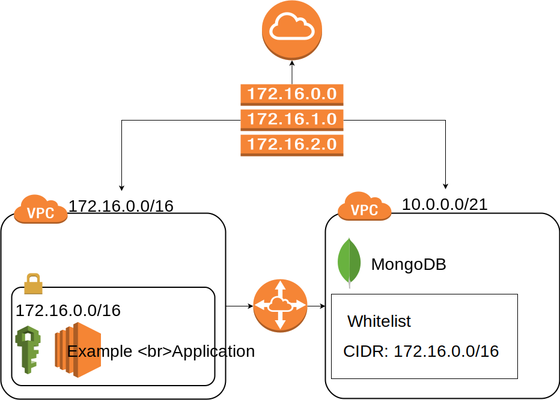
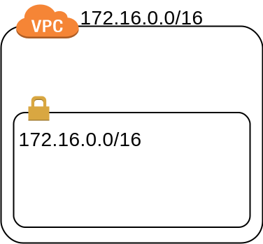
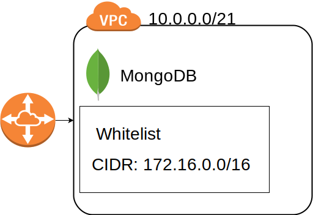
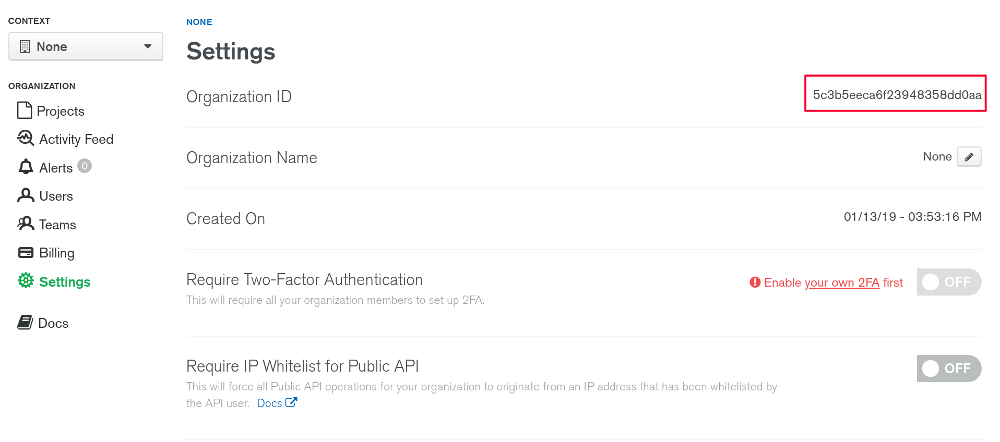
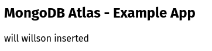
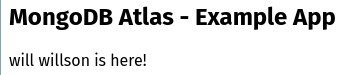

Lately I was doing a lot of “Infrastructure as Code” (IaC) in terraform at work. There was one application, which needed a MongoDB as the primary database. Sadly there is no managed MongoDB service in AWS so far. So there were two initial options for me:
- Host a self managed MongoDB in an EC2 instance
- Use Amazons DynamoDB
The main goal of the move into the cloud was to get away from all the administration tasks and have everything managed by the cloud hosters, so we have more time to get our actual problems solved. That’s why option one wasn’t really something we wantet to do. Option two wasn’t satisfactorily either, because we would go deep into the AWS rabbit hole. We wouldn’t have the chance to test the application locally and always needed a connection to an actual DynamoDB instance.
Update 10.02.2019: Actually there is a real alternative now called AWS DocumentDB. I didn’t look into it so far, so I don’t feel qualified to give any opinion on DocumentDB. But based on the MongoDB CEO MongoDB Atlas still has it’s right to exist.
Luckily there was a third option called MongoDB Atlas. This is MongoDB Inc’s own take at DaaS (Database as a Service). They instanciate a replica set of three or more instances on one of the most common cloud providers (AWS, Google Cloud Platform or Azure) for you. Additionally you get backups, auto scaling, alerts and many more features. MongoDB Atlas is also following an API first approach like AWS, so the creation of MongoDB resources can be automated. Sadly there is no support for MongoDB Atlas in Terraform so far. Luckily Akshay Karle already took care of this problem and wrote a third party plugin for Terraform.
In this blog post we create an infrastructure setup which consists of 2 AWS VPCs. In the first VPC our application will be hosted. This application will be able to communicate with the MongoDB replica set, hosted in another VPC by Atlas. Because we will host our MongoDB cluster in the same region, we can benefit of VPC peering. This means, that the application and MongoDB can communicate directly via local IPs between the two VPCs and no traffic goes out to the internet and back into the other VPC. This is more secure (Because you don’t need to care about securing the connection, because it’s local anyway) and also a lot of faster than sending every request and response over the internet. We will code everything in Terraform, so we are able to create our whole infrastructure with one terraform apply and are done with it. So let’s get started. Here is a rough overview of the most important pieces:

As you can see we have our 2 VPCs. The left AWS VPC will be avaible in the CIDR block 172.16.0.0/16. The right VPC is the one created by Mongo Atlas and will be available under 10.0.0.0/21. Both VPCs are connected via VPC-Peering. Also the CIDR block of the AWS VPC is whitelisted in MongoDB Atlas. On top we have a route table, to route traffic between the two VPCs and to the internet via an internet gateway.
The following guide will be threefold. In the first part we create the route table, internet gateway and AWS VPC with it’s subnet. In part two the MongoDB part will be build. In the third part we will deploy a small application inside of an EC2 instance, which is able to interact with the MongoDB. The whole code for this guide can be found here.
Part 1: The AWS VPC
In this part we will be creating the left side of our overview diagram. So basically this part:

In my example project I have created a subfolder called terraform where all the infrastructure code can be found. First of all we load the AWS Provider. This is done in the main.tf:
provider "aws" {
region = "eu-central-1"
version = "1.54"
}Next we create the actual VPC. This is done in the vpc.tf file:
resource "aws_vpc" "this" {
cidr_block = "172.16.0.0/16"
enable_dns_support = true
enable_dns_hostnames = true
tags = {
Name = "vpc"
}
}As already stated in the beginning, we use the 172.16.0.0/16 CIDR block for the AWS VPC. We also enable DNS support and DNS hostnames inside of the VPC. With those two options we basically enable DNS discovery in the local VPC scope, which allows us to resolve the MongoDB cluster DNS to it’s private IP.
Now we create a subnet inside of the VPC:
resource "aws_subnet" "this" {
cidr_block = "176.16.0.0/16"
vpc_id = "${aws_vpc.this.id}"
map_public_ip_on_launch = true
availability_zone = "eu-central-1a"
tags = {
Name = "subnet1"
}
}Here we create one subnet, which takes all of the VPCs available addresses and is hosted in the availability zone eu-central-1a. Furthermore we want to give launched instances a public IP on startup to be able to download updates for the EC2 instance.
Next we put the internet gateway in front of the VPC, which is straight forward.
resource "aws_internet_gateway" "this" {
vpc_id = "${aws_vpc.this.id}"
tags = {
Name = "internet-gateway"
}
}Finally we create the route table with a public route and associate our subnet to that route:
resource "aws_route_table" "this" {
vpc_id = "${aws_vpc.this.id}"
tags = {
Name = "route-table-public"
}
}
resource "aws_route" "this" {
route_table_id = "${aws_route_table.this.id}"
destination_cidr_block = "0.0.0.0/0"
gateway_id = "${aws_internet_gateway.this.id}"
}
resource "aws_route_table_association" "this" {
route_table_id = "${aws_route_table.this.id}"
subnet_id = "${aws_subnet.this.id}"
}Basically what we are doing here is to allow to route traffic from our VPC to every address in the internet. This is mandatory, because we want to get responses from our web applications inside of the VPC.
That’s it for the first part. You are now able to run terraform init && terraform apply to deploy the AWS VPC.
Part 2: MongoDB Atlas
In this part we care about the right half of the diagram and create our MongoDB Cluster at Atlas, make a whitelist entry for our AWS VPC and create VPC Peering between the two VPCs:

You can find the part 2 code in the atlas.tf file. We get started again, by adding a new provider to the main.tf:
provider "mongodbatlas" {
username = "${var.username}"
api_key = "${var.api_key}"
}To access your MongoDB Atlas account you need to pass your username and an API key. If you define them as variables like me, you can create a new file called variables.tf with the following content:
variable "username" {
type = "string"
description = "The Username for the MongoDB Atlas Login"
}
variable "api_key" {
type = "string"
description = "The API Key for the MongoDB Atlas Login"
}this defines the variables used in the main.tf file. Next we create a terraform.tfvars in which we actually set the values of those variables:
Because we save trustworthy information in those variables, we don’t actually set them in a normal *.tf file. These files are checked into version control, so we don’t want to write those informations down in those files. Instead we use *.tfvars files, which aren’t checked into version control.
As said in the beginning, mongodb atlas isn’t supported by terraform officially. So we need to install the third party provider. To install the provider you need to have go installed. With go installed you can get the package and symlink the executable to the plugin folder of terraform:
go get github.com/akshaykarle/terraform-provider-mongodbatlas
ln -s $GOPATH/bin/terraform-provider-mongodbatlas \
~/.terraform.d/plugins/If you do a terraform init again, you are able to initialize the mongodbatlas provider as well.
With everything set up, we can start creating the MongoDB Atlas cluster. The first thing needed is a project (former known as groups). Projects are a sort of grouping to isolate different environments from each other or to configure different alert settings. For a full description head over to the official documentation. We create a new file called atlas.tf for all our MongoDB Atlas resources. There we create a project first:
resource "mongodbatlas_project" "this" {
org_id = "${var.org_id}"
name = "example-project"
}To create a project resource we need an organisation id, which can be found in the settings tab:

Because we use it as a variable in the atlas.tf file, we need to add it to our terraform.tfvars
and variables.tf
variable "org_id" {
type = "string"
description = "The organisation id of the mongodb Login"
}The next thing we need is a container. The container is the network of the cloud provider. In the example of AWS it would create a VPC.
resource "mongodbatlas_container" "this" {
group = "${mongodbatlas_project.this.id}"
atlas_cidr_block = "10.0.0.0/21"
provider_name = "AWS"
region = "EU_CENTRAL_1"
}Pay attention to the region names, because they are different than in AWS.
Now we can create the cluster:
resource "mongodbatlas_cluster" "this" {
name = "example"
group = "${mongodbatlas_project.this.id}"
mongodb_major_version = "4.0"
provider_name = "AWS"
region = "EU_CENTRAL_1"
size = "M10"
disk_gb_enabled = true
backup = false
depends_on = ["mongodbatlas_container.this"]
}Here we create a MongoDB Cluster in Version 4.0 in AWS with the same region as the container. M10 is the smallest non sandbox size available. It has 2GB of RAM, 10 GB of storage and 0.2 vCPUs. With disk_gb_enabled we allow the cluster to automatically scale up. Lastly the cluster should be created explicitly after the container.
Now we create a database user:
resource "mongodbatlas_database_user" "this" {
username = "application-user"
password = "application-pw"
database = "admin"
group = "${mongodbatlas_project.this.id}"
roles {
name = "readWrite
database = "app"
}
}This user will later be used by the application to access the MongoDB. He gets a username, password and a will be authenticated in the admin database. Those information can also be exported to the terraform.tfvars file, but for this example application I keep those information hardcoded in the atlas.tf file. The admin database is the default value for MongoDB Atlas. The user gets rights to read and write to the app database.
Next thing we do, is establishing the VPC peering connection:
resource "mongodbatlas_vpc_peering_connection" "this" {
group = "${mongodbatlas_project.this.id}"
aws_account_id = "${var.aws_account_id}"
vpc_id = "${aws_vpc.this.id}"
route_table_cidr_block = "${aws_vpc.this.cidr_block}"
container_id = "${mongodbatlas_container.this.id}"
}
resource "aws_vpc_peering_connection_accepter" "this" {
vpc_peering_connection_id = "${mongodbatlas_vpc_peering_connection.this.connection_id}"
auto_accept = true
}First we create the MongoDB Atlas peering connection. The connection needs most of the stuff, we created before, like the AWS VPC to peer to and the container of our MongoDB cluster. Here we use another variable for the AWS account in which the destination VPC for the peering lies. This variable will be created analogous to those, we created earlier. The second thing is an acceptor, which should auto accept the peering requests for peerings with the MongoDB VPC.
Now we can also create an entry in our route table for the new MongoDB Atlas VPC, which allows traffic to be routed between those two VPCs properly:
resource "aws_route" "this" {
route_table_id = "${data.aws_route_table.this.id}"
destination_cidr_block = "${mongodbatlas_container.this.atlas_cidr_block}"
vpc_peering_connection_id = "${mongodbatlas_vpc_peering_connection.this.connection_id}"
}The last thing we have to do, is whitelist the AWS VPC CIDR Block in MongoDB Atlas, so that services inside of the AWS VPC are allowed to access the cluster.
resource "mongodbatlas_ip_whitelist" "this" {
group = "${mongodbatlas_project.this.id}"
cidr_block = "${data.aws_vpc.this.cidr_block}"
comment = "Whitelist for the AWS VPC"
}With this in place we are now able to create our MongoDB Atlas cluster. Again you can execute terraform apply to see the results.
Part 3: Deploying the app
In the last part we keep it as simple as possible. We will create a single EC2 instance, which will be provisioned to install a docker container with a small PHP application. The important part here, is that we now can give the DSN (Data Source Name) of the MongoDB to the app as an environment variable and the app is able to work with the MongoDB without any further manual interventions.
In reality there is a lot more to running a scalable infrastructure, like load balancing, autoscaling groups, launch templates and logging to name a few. But covering these topics in this post would crush the scope of this article, which is already pretty long at this point.
So without further ado let’s get startet by creating a ec2.tf file. First of all we create an AMI
data "aws_ami" "amazon_linux" {
most_recent = true
owners = ["amazon"]
filter {
name = "name"
values = ["amzn2-ami-hvm-2.0.20181024-x86_64-gp2"]
}
}This defines an AMI (Amazon Machine Image) which is basically the operating system, the ec2 instance will be started with.
In this EC2 instance we will run a docker container. I created a repository in amazons own ECR for my container image. So I add the repository as a data source:
data "aws_ecr_repository" "example_app" {
name = "snowiow/example-app"
}Now we create a small shell script, which will be executed as soon as the instance is started.
echo "Update YUM"
sudo yum -y update
echo "Install Docker"
sudo yum install -y docker
echo "Start Docker"
sudo service docker start
echo "Login to ECR (your Docker Registry)"
$(aws ecr get-login --no-include-email --region eu-central-1)
echo "Start docker container"
docker run \
-p 80:80 \
--env "MONGO_DSN=${mongodb_dsn}" \
--env "MONGO_DB=app" \
${container_img_url}Basically this installs docker, downloads the image from the container repository URL, where I uploaded it and executes it. As environment variables I give the container the DSN of the MongoDB cluster, the container repository URL and the database, which will always be called app, so it is hardcoded here. The DSN and repository URL values are interpolated, so we need a way to fill in the actual values. We do this by creating a template file as a data source in terraform:
data "template_file" "user_data" {
template = "${file("user_data.sh")}"
vars {
mongodb_dsn = "mongodb://${mongodbatlas_database_user.this.username}:${mongodbatlas_database_user.this.password}@${substr(mongodbatlas_cluster.this.mongo_uri_with_options, 10, -1)}"
docker_img_url = "${data.aws_ecr_repository.example_app.repository_url}"
}
}Here we have to do some string manipulations to get the username and password in the DSN as well, otherwise the app wouldn’t be able to login to the cluster.
The last thing we need before creating our instances, is an IAM Role. The EC2 instance we launch will assume this role and will have the rights provided by this role. First of all we need a policy document, which says, that the EC2 instance is allowed to assume a role
data "aws_iam_policy_document" "assume" {
statement {
sid = "AllowAssumeByEC2"
effect = "Allow"
actions = ["sts:AssumeRole"]
principals {
type = "Service"
identifiers = ["ec2.amazonaws.com"]
}
}
}Now we can create the role itself
resource "aws_iam_role" "example_app" {
name = "example-app-iam-role"
assume_role_policy = "${data.aws_iam_policy_document.assume.json}"
}Because our EC2 instance needs to download a Docker Image from the ECR, we need to give the right to the role first. Therefore we create another policy document:
data "aws_iam_policy_document" "ecr" {
statement {
sid = "AllowECRAuthorization"
effect = "Allow"
actions = [
"ecr:GetAuthorizationToken",
]
resources = ["*"]
}
statement {
sid = "AllowECRDownload"
effect = "Allow"
actions = [
"ecr:GetDownloadUrlForLayer",
"ecr:BatchGetImage",
"ecr:BatchCheckLayerAvailability",
]
resources = ["${data.aws_ecr_repository.example_app.arn}"]
}
}This policy consists of two statements. The first one allows an action to authorize ourselfs with the ECR, which we do in the user_data.sh script with this statement:
As a resource * was chosen, because the ecr:GetAuthorizationToken action is global and can’t be restricted to a specific resource. The second statement allows the download of the image. Here we defined the ARN of the specific repository, we want to pull from, because we don’t want to allow our EC2 instance to pull from every repository we have in our account.
With this policy document, we can create an actual policy from it, which will be attached to our example-app-role:
resource "aws_iam_policy" "ecr" {
name = "ExampleAppECRAccess"
description = "Gives right to get an ECR authorization token and pull images"
policy = "${data.aws_iam_policy_document.ecr.json}"
}
resource "aws_iam_role_policy_attachment" "ecr" {
role = "${aws_iam_role.example_app.name}"
policy_arn = "${aws_iam_policy.ecr.arn}"
}Because we can’t attach a role directly to an EC2 instance, we need an instance profile:
resource "aws_iam_instance_profile" "this" {
name = "example-app-instance-profile"
role = "${aws_iam_role.example_app.name}"
}Finally we create the EC2 instance itself and output the IP address, where it is reachable afterwards. We also need a security group for the instance, which basically tells who will be able to access the instance and to who the instance is allowed to respond to. In this example we allow traffic from any IP over port 80, because this is the port where the website is hosted:
resource "aws_security_group" "this" {
name = "sg"
vpc_id = "${aws_vpc.this.id}"
ingress {
from_port = 80
to_port = 80
protocol = "tcp"
cidr_blocks = ["0.0.0.0/0"]
}
egress {
from_port = 0
to_port = 0
protocol = "-1"
cidr_blocks = ["0.0.0.0/0"]
}
}
resource "aws_instance" "this" {
ami = "${data.aws_ami.amazon_linux.id}"
instance_type = "t2.micro"
subnet_id = "${aws_subnet.this.id}"
user_data = "${data.template_file.user_data.rendered}"
iam_instance_profile = "${aws_iam_instance_profile.this.name}"
security_groups = ["${aws_security_group.this.id}"]
}
output "example_app" {
value = "${aws_instance.this.public_ip}"
}This is it! If you execute terraform apply again, you will see the public IP of the EC2 instance. To see if the connection to the MongoDB is working we can play around with the example application.
The example application is a small website with two routes. Both use GET parameters. The first route looks like this:
/insert/{firstname}/{lastname}This route will insert a user with a first and lastname into the MongoDB. For the example of will willson we combine the returned IP of the terraform script with the route like this
<ec2ip>/insert/will/willsonthe response would look like this:

To really see if the user was inserted into MongoDB, we use the second route, which looks like this:
/{lastname}Basically if we insert the lastname as the only part of the route, the example application searches for users with this lastname and will print them. For the example of willson the URL would look like this:
<ec2ip>/willsonand we get this response

This application is pretty basic but works as a proof of concept of our infrastructure.
So there you have it. A VPC peering connection between MongoDB Atlas and our own AWS VPC, which is applicable in a single command, thanks to terraform. I created this post because there are many useful resources scattered around about this topic, but there is no single resource which combines them all together. So I hope this is of help for anybody who is trying to achieve something similar.